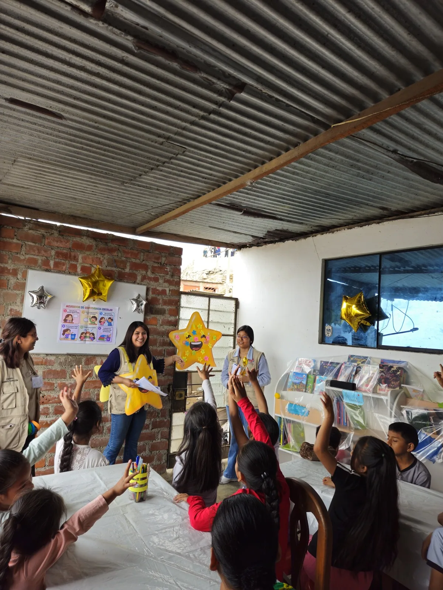
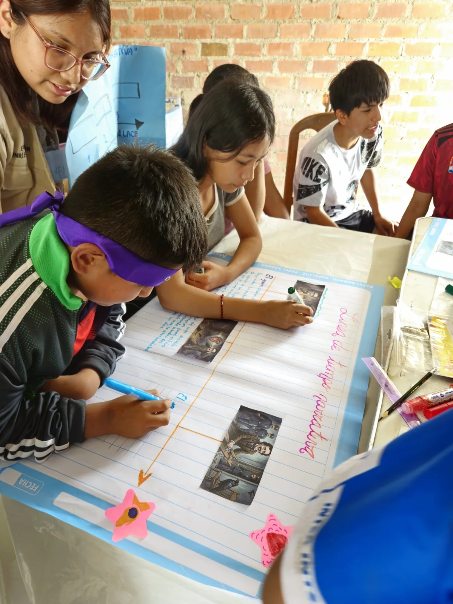

6 a 9 años
Sábados programados
9:00–10:30 a. m.
Proyectos educativos
Nuestro trabajo conecta la comprensión lectora con la creatividad, la expresión y el bienestar socioemocional.

Fortalecemos la comprensión lectora y el hábito de lectura en estudiantes de 6 a 14 años.
A través de lecturas compartidas y actividades lúdicas, creativas y reflexivas, trabajamos los niveles literal, inferencial y crítico. La biblioteca comunitaria amplía las posibilidades para elegir libros y desarrollar autonomía lectora.
Una sesión, muchas formas de aprender
Una pregunta, un juego o un objeto despierta la curiosidad.
Compartimos la historia, hacemos predicciones y escuchamos otras voces.
Relacionamos lo leído con ideas, experiencias y emociones.
Transformamos la lectura en dibujos, historietas, escritos o dramatizaciones.
Exploramos la biblioteca y registramos el recorrido en un pasaporte lector.
Programación 2026–2027
Sábados programados
9:00–10:30 a. m.
Sábados programados
10:30 a. m.–12:00 m.
Olla Común Mujeres Triunfadoras.
Con el acompañamiento de Bibliosonrisas.
Periodo previsto: del 3 de octubre de 2026 al 23 de enero de 2027. Clausura programada para el 30 de enero de 2027.
Incluye talleres extracurriculares y un encuentro con madres y padres para acompañar la lectura en casa. Las fechas y la participación se coordinan con el equipo.
Consulta la programaciónAsí se vive · Sesión 3
Con «Cómo atrapar una estrella», los más pequeños compartieron sueños y crearon sus propias estrellas. Los más grandes vivieron el suspenso de «El corazón delator» con sonidos y desafíos.
Una muestra de lo que pasa cuando la lectura se convierte en una experiencia compartida.
Más fotografías de las sesiones
Un espacio que acompaña el proyecto
Los libros continúan la experiencia más allá de cada taller. Conoce la biblioteca comunitaria que acompaña a nuestros lectores en Collique.
Explora la bibliotecaParte de nuestra trayectoria
Una propuesta de liderazgo estudiantil, ciudadanía y emprendimiento con propósito.
Este programa forma parte de la trayectoria educativa de Sonríe Corazón. Su diseño trabaja habilidades blandas, lectura de la realidad social, sostenibilidad y desarrollo de iniciativas para aportar al entorno.
Para conocer futuras implementaciones o proponer una colaboración, comunícate con el equipo.
Conversemos sobre una alianzaJuntando corazones para crear alegría
Súmate a nuestra comunidad y conversemos sobre cómo aportar.